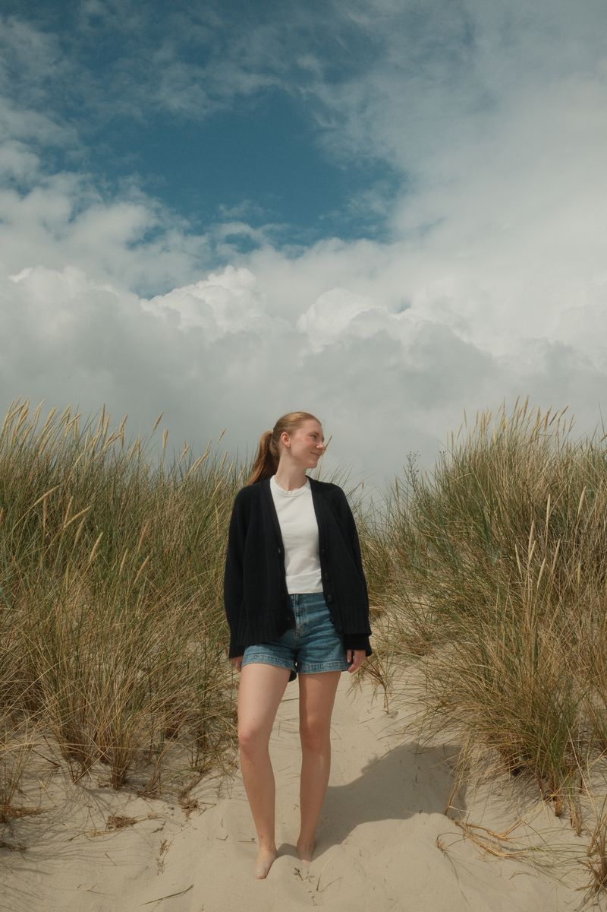

About Me.
Hi! I’m Lovisa Celander, a 23-year-old Growth Marketing student based in Stockholm, Sweden. I’m currently studying the Growth Marketing program at Berghs School of Communication, where I’m learning how to help brands grow through strategy, creativity, and digital marketing.
Alongside my studies, I run my own brand Ophelia, where I design and sew handmade products like toiletry bags and laptop cases. Through Ophelia, I’ve discovered my passion for storytelling, brand identity, and creating with intention—values I bring into every project I work on.
I enjoy exploring how analysis, numbers, and strategy can work together with content and creativity to make a brand grow. I’m looking for opportunities where I can contribute, learn, and apply both my analytical and creative skills to drive meaningful growth.